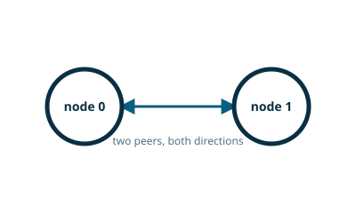

pynng / Python pattern guide

PAIR — Two Way Radio
PAIR connects exactly two peers, each of which can send and receive freely.
pynng is an independently maintained Python binding for NNG. Its maintainers and release cycle are separate from the NNG core project.
This example is sourced from the project’s default branch. See the upstream example for its current history.
pair0.py
"""
The simplest, most straightforward socket is the Pair0. It represents a
pipe for one-to-one bidrectional communication.
To demonstrate the script, run the following commands from two separate
terminals:
python pair0.py node0 ipc:///tmp/pair0_example # from terminal 1
python pair0.py node1 ipc:///tmp/pair0_example # from terminal 2
It can be fun to kill (just ^C) each node and restart it, to demonstrate how
the sockets will automatically reconnect.
"""
import sys
import time
import pynng
def usage():
"""
print usage message and exit.
"""
print("Usage: {} node0|node1 URL".format(sys.argv[0]))
sys.exit(1)
def main():
if len(sys.argv) < 3:
usage()
node = sys.argv[1]
if node not in ("node0", "node1"):
usage()
addr = sys.argv[2]
with pynng.Pair0(recv_timeout=100, send_timeout=100) as sock:
if node == "node0":
sock.listen(addr)
else:
sock.dial(addr)
while True:
try:
msg = sock.recv()
print("got message from", msg.decode())
except pynng.Timeout:
pass
time.sleep(0.5)
try:
sock.send(node.encode())
except pynng.Timeout:
pass
if __name__ == "__main__":
main()
Run it
python -m pip install pynng
# Run these in separate terminals.
python pair0.py node0 ipc:///tmp/pair0_example
python pair0.py node1 ipc:///tmp/pair0_example